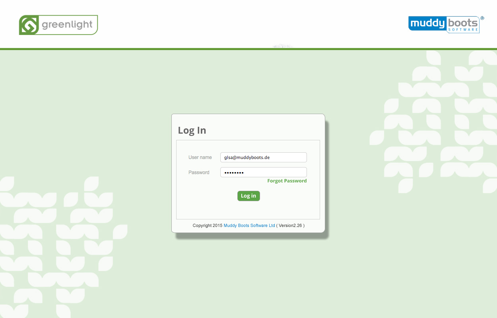

Signup and Login
The login page should contain much of the Greenlight Branding It is a front cover to the application and should look inviting and friendly.
Generic Register Page

Generic Log in Page

Generic Login Loading Page
This should be used to inform the user what is happenening when the application starts up for the first time or from a long period of non us.
This avoids a blank screen that appeared for s short period when some customers logged in.
In this instance the Greenlight logo would be replaced by the relevant product application logo.